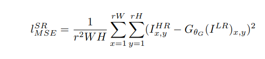
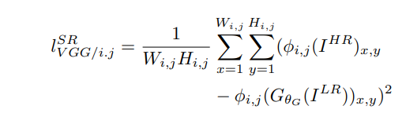
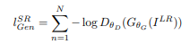
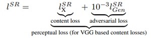
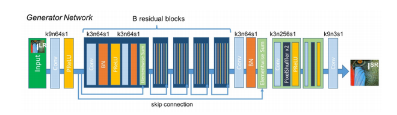
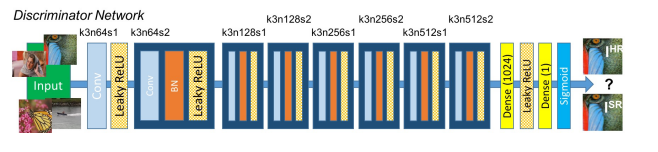

In SISR the aim is to estimate a high-resolution, superresolved image I
SR from a low-resolution input image
I
LR. Here I
LR is the low-resolution version of its highresolution counterpart I
HR. The high-resolution images
are only available during training. In training, I
LR is
obtained by applying a Gaussian filter to I
HR followed by a
downsampling operation with downsampling factor r. For
an image with C color channels, we describe I
LR by a
real-valued tensor of size W × H × C and I
HR, I
SR by
rW × rH × C respectively.
Our ultimate goal is to train a generating function G that
estimates for a given LR input image its corresponding HR
counterpart. To achieve this, we train a generator network as
a feed-forward CNN GθG parametrized by θG. Here θG =
{W1:L; b1:L} denotes the weights and biases of a L-layer
deep network and is obtained by optimizing a SR-specific
loss function l
SR. For training images I
HR
n
, n = 1, . . . , N
with corresponding I
LR
n
, n = 1, . . . , N, we solve:
ˆθG = arg min
θG
1
N
X
N
n=1
l
SR(GθG (I
LR
n
), IHR
n
) (1)
In this work we will specifically design a perceptual loss
l
SR as a weighted combination of several loss components
that model distinct desirable characteristics of the recovered
SR image.
Peak signal-to-noise ratio (PSNR) is an engineering term for the ratio between the maximum possible power of a signal and the power of corrupting noise that affects the fidelity of its representation. Because many signals have a very wide dynamic range, PSNR is usually expressed as a logarithmic quantity using the decibel scale.
PSNR is commonly used to quantify reconstruction quality for images and video subject to lossy compression.
PSNR is most easily defined via the mean squared error (MSE). Given a noise-free m×n monochrome image I and its noisy approximation K, MSE is defined as
PSNR is most commonly used to measure the quality of reconstruction of lossy compression codecs (e.g., for image compression). The signal in this case is the original data, and the noise is the error introduced by compression. When comparing compression codecs, PSNR is an approximation to human perception of reconstruction quality.
Typical values for the PSNR in lossy image and video compression are between 30 and 50 dB, provided the bit depth is 8 bits, where higher is better. The processing quality of 12-bit images is considered high when the PSNR value is 60 dB or higher.[3][4] For 16-bit data typical values for the PSNR are between 60 and 80 dB.[5][6] Acceptable values for wireless transmission quality loss are considered to be about 20 dB to 25 dB.[7][8]
In the absence of noise, the two images I and K are identical, and thus the MSE is zero.
Loss Function:
The SRGAN uses perpetual loss function (LSR) which is the weighted sum of two loss components : content loss and adversarial loss. This loss is very important for the performance of the generator architecture:
Content Loss: We use two types of content loss in this paper : pixelwise MSE loss for the SRResnet architecture, which is most common MSE loss for image Super Resolution. However MSE loss does not able to deal with high frequency content in the image that resulted in producing overly smooth images. Therefore the authors of the paper decided to use loss of different VGG layers. This VGG loss is based on the ReLU activation layers of the pre-trained 19 layer VGG network. This loss is defined as follows:

Simple Content Loss

VGG content loss
Adversarial Loss: The Adversarial loss is the loss function that forces the generator to image more similar to high resolution image by using a discriminator that is trained to differentiate between high resolution and super resolution images.

Therefore total content loss of this architecture will be :

3.1. Data and similarity measures
We perform experiments on three widely used benchmark datasets Set5 [3], Set14 [69] and BSD100, the testing
set of BSD300 [41]. All experiments are performed with
a scale factor of 4× between low- and high-resolution
images. This corresponds to a 16× reduction in image
pixels. For fair comparison, all reported PSNR [dB] and
SSIM [58] measures were calculated on the y-channel of
center-cropped, removal of a 4-pixel wide strip from each
border, images using the daala package1
. Super-resolved
images for the reference methods, including nearest neighbor, bicubic, SRCNN [9] and SelfExSR [31], were obtained
from online material supplementary to Huang et al.2
[31]
and for DRCN from Kim et al.3
[34]. Results obtained
with SRResNet (for losses: l
SR
MSE and l
SR
V GG/2.2
) and the
SRGAN variants are available online4
. Statistical tests were
performed as paired two-sided Wilcoxon signed-rank tests
and significance determined at p < 0.05.
The reader may also be interested in an independently
developed GAN-based solution on GitHub5
. However it
only provides experimental results on a limited set of faces,
which is a more constrained and easier task.
3.2. Training details and parameters
We trained all networks on a NVIDIA Tesla M40 GPU
using a random sample of 350 thousand images from
the ImageNet database [45]. These images are distinct
from the testing images. We obtained the LR images
by downsampling the HR images (BGR, C = 3) using
bicubic kernel with downsampling factor r = 4. For each
mini-batch we crop 16 random 96 × 96 HR sub images
of distinct training images. Note that we can apply the
generator model to images of arbitrary size as it is fully
1https://github.com/xiph/daala (commit: 8d03668)
2https://github.com/jbhuang0604/SelfExSR
3http://cv.snu.ac.kr/research/DRCN/
4https://twitter.box.com/s/
lcue6vlrd01ljkdtdkhmfvk7vtjhetog
5https://github.com/david-gpu/srez
convolutional. We scaled the range of the LR input images
to [0, 1] and for the HR images to [−1, 1]. The MSE loss
was thus calculated on images of intensity range [−1, 1].
VGG feature maps were also rescaled by a factor of 1
12.75
to obtain VGG losses of a scale that is comparable to the
MSE loss. This is equivalent to multiplying Equation 5
with a rescaling factor of ≈ 0.006. For optimization we
use Adam [36] with β1 = 0.9. The SRResNet networks
were trained with a learning rate of 10−4
and 106 update
iterations. We employed the trained MSE-based SRResNet
network as initialization for the generator when training
the actual GAN to avoid undesired local optima. All
SRGAN variants were trained with 105 update iterations
at a learning rate of 10−4
and another 105
iterations at a
lower rate of 10−5
. We alternate updates to the generator
and discriminator network, which is equivalent to k = 1
as used in Goodfellow et al. [22]. Our generator network
has 16 identical (B = 16) residual blocks. During test time
we turn batch-normalization update off to obtain an output
that deterministically depends only on the input [32]. Our
implementation is based on Theano [53] and Lasagne [8].
3.4. Investigation of content loss
We investigated the effect of different content loss
choices in the perceptual loss for the GAN-based networks.
Specifically we investigate l
SR = l
SR
X + 10−3
l
SR
Gen for the
following content losses l
SR
X
:
Table 1: Performance of different loss functions for SRResNet and the adversarial networks on Set5 and Set14
benchmark data. MOS score significantly higher (p < 0.05)
than with other losses in that category∗
. [4× upscaling]
SRResNet- SRGANSet5 MSE VGG22 MSE VGG22 VGG54
PSNR 32.05 30.51 30.64 29.84 29.40
SSIM 0.9019 0.8803 0.8701 0.8468 0.8472
MOS 3.37 3.46 3.77 3.78 3.58
Set14
PSNR 28.49 27.19 26.92 26.44 26.02
SSIM 0.8184 0.7807 0.7611 0.7518 0.7397
MOS 2.98 3.15∗ 3.43 3.57 3.72∗
• SRGAN-MSE: l
SR
MSE, to investigate the adversarial
network with the standard MSE as content loss.
• SRGAN-VGG22: l
SR
V GG/2.2 with φ2,2, a loss defined
on feature maps representing lower-level features [68].
• SRGAN-VGG54: l
SR
V GG/5.4 with φ5,4, a loss defined
on feature maps of higher level features from deeper
network layers with more potential to focus on the
content of the images [68, 65, 40]. We refer to this
network as SRGAN in the following.
We also evaluate the performance of the generator network
without adversarial component for the two losses l
SR
MSE
(SRResNet-MSE) and l
SR
V GG/2.2
(SRResNet-VGG22). We
refer to SRResNet-MSE as SRResNet. Note, when training
SRResNet-VGG22 we added an additional total variation
loss with weight 2 × 10−8
to l
SR
V GG/2.2
[2, 33]. Quantitative
results are summarized in Table 1 and visual examples
provided in Figure 6. Even combined with the adversarial
loss, MSE provides solutions with the highest PSNR values
that are, however, perceptually rather smooth and less
convincing than results achieved with a loss component
more sensitive to visual perception. This is caused by
competition between the MSE-based content loss and the
adversarial loss. We further attribute minor reconstruction
artifacts, which we observed in a minority of SRGANMSE-based reconstructions, to those competing objectives.
We could not determine a significantly best loss function
for SRResNet or SRGAN with respect to MOS score
on Set5. However, SRGAN-VGG54 significantly outperformed other SRGAN and SRResNet variants on Set14 in
terms of MOS. We observed a trend that using the higher
level VGG feature maps φ5,4 yields better texture detail
when compared to φ2,2 (c.f . Figure 6). Further examples of
perceptual improvements through SRGAN over SRResNet
are provided in the supplementary material.
Figure 5: Color-coded distribution of MOS scores on
BSD100. For each method 2600 samples (100 images ×
26 raters) were assessed. Mean shown as red marker, where
the bins are centered around value i. [4× upscaling]
3.5. Performance of the final networks
We compare the performance of SRResNet and SRGAN to NN, bicubic interpolation, and four state-of-theart methods. Quantitative results are summarized in Table
2 and confirm that SRResNet (in terms of PSNR/SSIM)
sets a new state of the art on three benchmark datasets.
Please note that we used a publicly available framework
for evaluation (c.f . Section 3.1), reported values might thus
slightly deviate from those reported in the original papers.
We further obtained MOS ratings for SRGAN and all
reference methods on BSD100. Examples of images superresolved with SRResNet and SRGAN are depicted in the
supplementary material. The results shown in Table 2
confirm that SRGAN outperforms all reference methods by
a large margin and sets a new state of the art for photorealistic image SR. All differences in MOS (c.f . Table
2) are highly significant on BSD100, except SRCNN vs.
SelfExSR. The distribution of all collected MOS ratings is
summarized in Figure 5.
Generator Architecture:
The generator architecture contains residual network instead of deep convolution networks because residual networks are easy to train and allows them to be substantially deeper in order to generate better results. This is because the residual network used a type of connections called skip connections.
There are B residual blocks (16), originated by ResNet. Within the residual block, two convolutional layers are used, with small 3×3 kernels and 64 feature maps followed by batch-normalization layers and ParametricReLU as the activation function.
The resolution of the input image is increased with two trained sub-pixel convolution layers.
This generator architecture also uses parametric ReLU as an activation function which instead of using a fixed value for a parameter of the rectifier (alpha) like LeakyReLU. It adaptively learns the parameters of rectifier and improves the accuracy at negligible extra computational cost
During the training, A high-resolution image (HR) is downsampled to a low-resolution image (LR). The generator architecture than tries to upsample the image from low resolution to super-resolution. After then the image is passed into the discriminator, the discriminator and tries to distinguish between a super-resolution and High-Resolution image and generate the adversarial loss which then backpropagated into the generator architecture.

Discriminator Architecture:
The task of the discriminator is to discriminate between real HR images and generated SR images. The discriminator architecture used in this paper is similar to DC- GAN architecture with LeakyReLU as activation. The network contains eight convolutional layers with of 3×3 filter kernels, increasing by a factor of 2 from 64 to 512 kernels. Strided convolutions are used to reduce the image resolution each time the number of features is doubled. The resulting 512 feature maps are followed by two dense layers and a leakyReLU applied between and a final sigmoid activation function to obtain a probability for sample classification.
